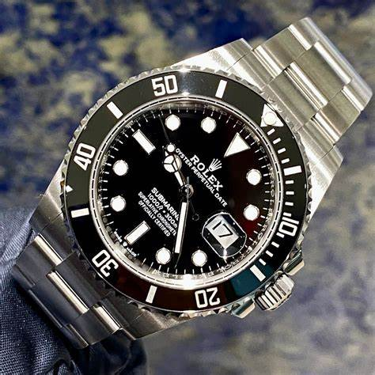

May 25 2015

This is first Article
the RM 27-02 is known for its advanced engineering and durability, making it one of the most technologically advanced designs by Richard Mille, The RM 27-02 features a groundbreaking unibody baseplate made from Carbon TPT, inspired by race car chassis. This design enhances rigidity and impact resistance
Price: Approximately ₹7 Crores (around $800,000).
Limited Edition: Only 50 pieces ever produced.
READ MOREJanuary 01 1953
This is second Article
The Rolex Submariner is a legendary dive watch that has become an icon in the world of horology. The Submariner has retained its core design principles since its inception, with features like the classic round case, broad hands, unidirectional rotating bezel, and luminescent hour markers.
Price: Rolex Submariner Date: Around $9,200 to $17,000.
Waterproofness: The Submariner's Oyster case is waterproof to a depth of 300 meters (1,000 feet).
READ MORE